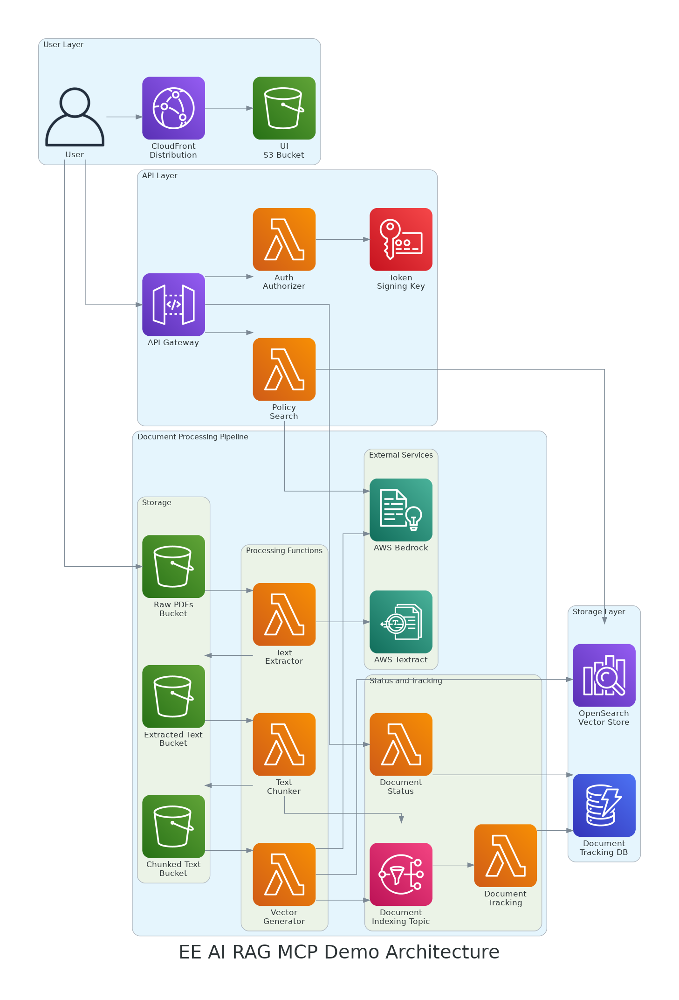

EE-AI-RAG-MCP-Demo Technical Documentation
This documentation provides a comprehensive technical overview of the EE-AI-RAG-MCP-Demo solution, a serverless application that enables semantic search of policy documents using AWS services and RAG (Retrieval Augmented Generation) technology.
About This Solution
The EE-AI-RAG-MCP-Demo is a production-ready solution that demonstrates how to build a modern document processing and retrieval system using AWS serverless technologies. It allows users to upload PDF documents, process them into searchable chunks, and query them using natural language through a semantic search interface.
2. Architecture
The solution is built using a serverless, event-driven architecture on AWS. It consists of multiple components organized in layers that work together to provide the complete document processing and semantic search functionality.
The architecture follows AWS best practices for security, scalability, and high availability. The components are loosely coupled through event-driven communication, allowing for independent scaling and resilience.
This RAG (Retrieval Augmented Generation) system integrates several AWS services:
- Document Ingestion: PDF documents are uploaded to S3, triggering a processing pipeline
- Text Processing: Text is extracted using AWS Textract and chunked for optimal processing
- Vector Generation: Text chunks are converted to vector embeddings using Amazon Bedrock
- Vector Storage: Embeddings are stored in OpenSearch for efficient similarity search
- Query Processing: Natural language queries are converted to vectors and used to find relevant information
- Response Generation: Relevant context and the original query are sent to Claude to generate comprehensive answers
2.1 User Interface
The user interface is a static website hosted on Amazon S3 and distributed via Amazon CloudFront, providing secure HTTPS access and global content delivery.
- S3 Website Bucket: Hosts the static HTML, CSS, and JavaScript files.
- CloudFront Distribution: Provides HTTPS access, caching, and global distribution of the UI content.
- Origin Access Control (OAC): Secures S3 bucket content so it's only accessible through CloudFront.
2.2 API Layer
The API layer provides secure endpoints for policy search and document status queries, with JWT token authentication.
- API Gateway: HTTP API with CORS support and Lambda integration.
- Auth Authorizer Lambda: Validates JWT tokens for secure API access.
- KMS Key: Used for token signing and verification.
- Policy Search Lambda: Processes natural language queries and retrieves relevant policy information.
- Document Status Lambda: Provides information about document processing status.
2.3 Document Processing
The document processing pipeline handles the ingestion, extraction, chunking, and vectorization of PDF documents.
- Text Extractor Lambda: Triggered by S3 events when PDFs are uploaded, uses Amazon Textract to extract text.
- Text Chunker Lambda: Splits extracted text into semantically meaningful chunks for indexing.
- Vector Generator Lambda: Creates vector embeddings for text chunks using AWS Bedrock.
- Document Tracking Lambda: Tracks document processing status and updates DynamoDB.
- SNS Topic: Decouples components and enables asynchronous processing.
2.4 Data Storage
The solution uses multiple storage services to manage data throughout the processing pipeline.
- S3 Buckets: Store raw PDFs, extracted text, chunked text, and vector embeddings.
- OpenSearch: Stores and indexes vector embeddings for semantic search.
- DynamoDB: Tracks document processing status and metadata.
- CloudWatch Logs: Captures Lambda function logs for monitoring and debugging.
| Component | Purpose | Security Features |
|---|---|---|
| S3 Raw PDFs Bucket | Store uploaded PDF documents | Server-side encryption, lifecycle policies |
| S3 Extracted Text Bucket | Store text extracted from PDFs | Server-side encryption, IAM policies |
| S3 Chunked Text Bucket | Store text chunks with metadata | Server-side encryption, IAM policies |
| OpenSearch Domain | Vector database for embeddings | Encryption, IAM access control |
| DynamoDB Table | Document processing status | Encryption at rest, IAM policies |
3. Setup & Deployment
3.1 Prerequisites
Before deploying the solution, ensure you have the following prerequisites in place:
- AWS Account with appropriate permissions
- AWS CLI configured with appropriate credentials
- Terraform v1.0.0 or later
- Python 3.9 or later
- Node.js 14.x or later (for UI development)
- GitHub account (for CI/CD integration)
AWS Permissions
The deployment requires administrative privileges in your AWS account. For production environments, it's recommended to use the principle of least privilege and create a dedicated IAM role with only the necessary permissions.
3.2 Infrastructure Setup
The infrastructure is defined as code using Terraform and organized in two main modules:
- Admin Setup: Creates foundational resources for deployment (S3 bucket for Terraform state, DynamoDB for state locking, IAM roles for CI/CD)
- Application: Deploys the application components (Lambda functions, S3 buckets, OpenSearch domain, API Gateway, etc.)
3.3 Application Deployment
The application deployment includes preparing Lambda function packages, building layers, and updating the infrastructure:
- Install Lambda function dependencies
- Create Lambda layers for shared dependencies
- Package Lambda functions
- Deploy infrastructure with Terraform
- Upload UI files to the S3 bucket
3.4 CI/CD Pipeline
The project includes a CI/CD pipeline configured in GitHub Actions that automates testing, building, and deployment:
- Automatically runs linting and tests on pull requests
- Builds Lambda packages and layers
- Deploys infrastructure changes using Terraform
- Updates UI files in the S3 bucket
- Uses AWS OIDC integration for secure authentication
The CI/CD pipeline is configured to deploy to different environments based on the Git branch:
mainbranch deploys to productionfeature/*branches can deploy to development environments
4. Operation
4.1 Uploading Documents
Documents can be uploaded to the system in two ways:
- Direct S3 Upload: PDFs can be uploaded directly to the Raw PDFs bucket using the AWS Console, CLI, or SDKs.
- API-based Upload: A separate upload API can be used to programmatically upload documents (not included in this demo but can be added).
Supported Document Formats
The current implementation supports PDF documents. To support other formats like Word or Excel, additional preprocessing steps would need to be added to the pipeline.
4.2 Document Processing Flow
When a document is uploaded to the Raw PDFs bucket, it triggers the following processing flow:
Stage 1: Document Upload and Text Extraction
- PDF Upload: User uploads a PDF document to the S3 raw PDF bucket
- Event Trigger: The upload event triggers the Text Extractor Lambda
- Text Extraction: The Lambda extracts text using Amazon Textract
- Status Tracking: Processing status is recorded in DynamoDB
Stage 2: Text Chunking
- Chunk Creation: The Text Chunker Lambda splits extracted text into semantic chunks
- Chunk Storage: Chunks are saved to the Chunked Text bucket
- Status Update: Chunking status is updated in DynamoDB
Stage 3: Vector Generation and Indexing
- Embedding Generation: The Vector Generator Lambda uses Bedrock to create embeddings
- Vector Indexing: Embeddings are stored in OpenSearch for similarity search
- Completion Tracking: Progress is tracked for each chunk, with completion event when all chunks are processed
The entire process is asynchronous and designed to handle large documents efficiently. Progress can be monitored through the Document Status API.
4.3 Monitoring Status
Document processing status can be monitored through:
- UI Status Panel: The Document Status tab in the UI shows current processing status of all documents.
- API Status Endpoint: The status API endpoint provides programmatic access to document processing status.
- CloudWatch Logs: Each Lambda function logs detailed information about processing steps.
- CloudWatch Metrics: Standard metrics are available for all components of the system.
Document status transitions through the following states:
- PROCESSING: Document is being processed through the pipeline.
- COMPLETED: Document has been fully processed and indexed.
- CANCELLED: Processing was cancelled, typically because a newer version was uploaded.
- ERROR: An error occurred during processing.
4.4 Searching Policies
Users can search for policies using natural language queries through:
- UI Search Interface: Enter questions or keywords in the search box.
- API Search Endpoint: Submit queries programmatically through the API.
The search process works as follows:
- The user's query is converted to a vector embedding using AWS Bedrock.
- OpenSearch performs a k-NN similarity search to find the most relevant text chunks.
- The most relevant chunks are retrieved and sent to AWS Bedrock Claude to generate a comprehensive answer.
- The answer is returned to the user with citations to the source documents.
Authentication Requirement
API searches require a valid JWT token for authentication. Tokens can be generated with the appropriate permissions and provided in the Authorization header.
5. Development
5.1 Local Development
The project supports local development for various components:
- Lambda Functions: Can be developed and tested locally using tools like AWS SAM or by invoking handlers directly.
- UI: The UI is a static website that can be served locally for development.
- Infrastructure: Terraform configurations can be validated and planned locally.
5.2 Code Structure
The codebase is organized as follows:
- src/: Source code for Lambda functions and utilities
- src/lambda_functions/: Individual Lambda function implementations
- src/utils/: Shared utility modules
- terraform/: Terraform configuration files
- terraform/admin-setup/: Foundational infrastructure configuration
- terraform/app/: Application infrastructure configuration
- ui/: User interface files
- tests/: Test cases for Lambda functions and utilities
- scripts/: Utility scripts for building and deployment
- diagrams/: Architecture diagrams and documentation
5.3 Testing
The project includes comprehensive testing:
- Unit Tests: For Lambda function handlers and utility modules.
- Integration Tests: For interactions between components.
- Code Coverage: Measured and enforced for Python code.
- Linting: Using flake8 and black for code quality.
- Pre-commit Hooks: Automatically run tests and linting before commits.
Test Coverage Requirement
The project enforces a minimum test coverage of 80% for all Python code. This helps ensure high code quality and reduces the risk of bugs in production.
5.4 Contribution Guidelines
Contributions to the project should follow these guidelines:
- Fork the repository and create a feature branch for your changes.
- Ensure all tests pass and code meets quality standards.
- Include appropriate tests for new features or bug fixes.
- Update documentation to reflect changes.
- Submit a pull request with a clear description of the changes.
The CI/CD pipeline will automatically run tests and linting checks on pull requests to ensure code quality.
6. Security
6.1 Authentication
The solution implements the following authentication mechanisms:
- API Authentication: JWT tokens validated by a Lambda authorizer.
- Token Signing: KMS for secure token signing and verification.
- UI Access: Secured via CloudFront with HTTPS.
- AWS Service Authentication: IAM roles with least privilege.
6.2 Data Protection
Data is protected throughout the system using:
- Encryption at Rest: All S3 buckets, DynamoDB tables, and OpenSearch domains use encryption.
- Encryption in Transit: HTTPS enforcement for all communication.
- IAM Policies: Fine-grained access control for AWS resources.
- Secrets Management: Sensitive credentials stored in AWS Secrets Manager.
- S3 Bucket Policies: Restrict access to authorized principals only.
6.3 Compliance
The solution is designed with compliance in mind:
- Logging: Comprehensive logging for audit and compliance requirements.
- Resource Tagging: All resources are tagged for cost allocation and governance.
- IAM Roles: Least privilege principle applied to all service roles.
- Encryption: Consistent encryption across all data stores.
- Monitoring: CloudWatch alarms and metrics for operational visibility.
Regulatory Compliance
While the solution implements best practices for security, specific regulatory requirements (GDPR, HIPAA, etc.) may require additional controls or modifications.
7. Performance & Scaling
7.1 Performance Considerations
The solution is designed for performance in key areas:
- Document Processing: Asynchronous, event-driven architecture for parallel processing.
- Search Latency: OpenSearch optimized for fast vector searches.
- UI Responsiveness: CloudFront distribution for low-latency content delivery.
- API Performance: Serverless architecture allows automatic scaling based on load.
7.2 Scaling Strategies
The solution scales automatically in several ways:
- Lambda Functions: Automatically scale based on concurrent invocations.
- S3 Buckets: Virtually unlimited storage and high throughput.
- DynamoDB: Auto-scaling for read and write capacity.
- OpenSearch: Can be scaled by adjusting instance type and count.
- API Gateway: Handles thousands of concurrent requests.
For high-volume scenarios, consider:
- Increasing Lambda memory allocations for better performance.
- Scaling OpenSearch domain with more instances or larger instance types.
- Implementing batching for large document processing jobs.
- Setting appropriate concurrency limits on Lambda functions.
7.3 Cost Optimization
The serverless architecture helps optimize costs, but consider these strategies:
- S3 Lifecycle Policies: Automatically transition old objects to cheaper storage tiers.
- Lambda Optimization: Balance memory allocation and execution time for cost efficiency.
- CloudFront Caching: Reduce origin requests by optimizing cache settings.
- Reserved Capacity: For predictable workloads, consider reserved capacity for services like OpenSearch.
- Monitoring and Alerting: Set up cost anomaly detection to identify unexpected charges.
| Service | Typical Cost | Cost Factors |
|---|---|---|
| Lambda Functions | $10-30 | Invocations, memory, duration |
| S3 Storage | $1-5 | Storage volume, requests |
| OpenSearch | $80-200 | Instance type, number of instances |
| DynamoDB | $5-15 | Read/write capacity units, storage |
| API Gateway | $5-20 | Number of requests |
| CloudFront | $1-5 | Data transfer, requests |
| AWS Textract | $10-30 | Number of pages processed |
| AWS Bedrock | $20-100 | Input/output tokens, embedding generation |
8. Troubleshooting
8.1 Common Issues
Common issues and their solutions:
- Documents Stuck in PROCESSING State: Check the Document Tracking Lambda logs for race conditions or incomplete processing.
- Lambda Invocation Failures: Check IAM permissions, code errors, and timeout settings.
- API Gateway 403 Errors: Verify JWT token validity and authorizer configuration.
- OpenSearch Connectivity Issues: Check security group settings and IAM permissions.
- CloudFront Access Denied: Verify bucket policy and Origin Access Control configuration.
Debugging Race Conditions
Document processing involves multiple asynchronous steps that can experience race conditions. The solution uses atomic operations in DynamoDB and proper condition expressions to minimize these issues.
8.2 Logging & Monitoring
The solution provides comprehensive logging and monitoring:
- CloudWatch Logs: All Lambda functions and API Gateway log to CloudWatch.
- CloudWatch Metrics: Standard metrics for Lambda, API Gateway, S3, etc.
- Custom Metrics: Document processing times, success rates, etc.
- Alerts: Can be configured for error conditions and performance issues.
- Distributed Tracing: X-Ray integration for tracing requests across services.
8.3 Support
For support with the solution:
- File issues on the GitHub repository.
- Consult the documentation for common issues and solutions.
- Check CloudWatch Logs for detailed error information.
- Contact the development team for enterprise support options.